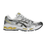
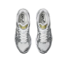
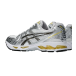
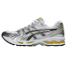
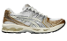
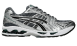
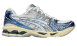
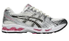
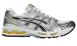

- 
-

- 
-

- 
- 
Size Guide
How to measure shoe size?
Follow the simple steps below to determine your shoe size. Make sure you do this during or at the end of day to ensure the right size (feet typically swell during the day).
- Put a piece of blank paper under your feet. Stand up straight and have your heel lightly touching against the wall.
- Have someone mark the end of the longest toe and the back of your heel on the sheet with a pen or pencil. Afterwards measure the length of your feet from heel to toe.
- Repeat the steps for your other foot and compare it with our size chart below.

ASICS GEL-KAYANO 14
$155.00
Colour:
White/Tai Chi Yellow
- 
- 
- 
- 
- 
Size:
6.5 UK
- UK
- US
- EU
- Foot Length (cm)
- 6
- 6.5
- 7
- 7.5
- 8
- 8.5
- 9
- 9.5
- 10
- 10.5
- 11
- 11.5
- 12
- 12.5
- 13
Size guide
- Description
- Details
- Shipping
The GEL-KAYANO 14 sneaker resurfaces with its late 2000s aesthetic as a nod to our storied GEL-KAYANO series. Reinterpreting the shoe's performance capabilities with updated materials and componentry, this version became the first iteration in the sneaker's lineage to be designed by someone other than Toshikazu Kayano. Inspired by the original tooling from 2008, this shoe also features GEL technology underfoot for advanced impact absorption.